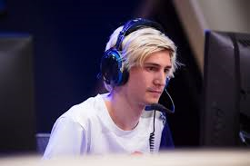
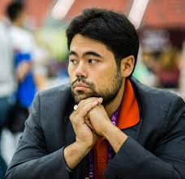

teszt szöveg a
- Hogyan lett a Sakk újra népszerű?
- Hikaru Nakamura
- XQC(Félix Lengyel)
jobb
bal
Hogyan lett a Sakk újra népszerű?

Hikaru volt az az ember aki életet lehelt ebbe a játékba,sikerült neki ezt a játékot a nagy közönség előtt új szinben feltünktetnie. Ez főként a személyiségével és a hozzáállásával sikerült megszerettetni a játékot az emberek nagyrészével. Ezután közösen összeálltak XQC-vel és ez által nagyon felkapott lett a sakk. Ennek hatására született meg a PogChamps event.Ez egy ojan sakkverseny,ahol sok híres streamer egymás ellen megmérettetik tudásaikat, miközben a már eddig is híres sakkmesterek kommentáják a játékukat, és esetenként fel is készítik a streamereket a versenyre.
Hikaru Nakamura

Hikaru Nakamura sok eredményt ért el életében.
Azzal hívta fel a sakkvilág figyelmét az Egyesült Államokra, hogy trófea után trófeát nyert karrierje során.
2003-ban Ő lett a legfiatalabb sakk nagymester Amerikában, ezzel legyőzte Bobby Fisher 1958 as rekordját. Hikaru arról is híres lett hogy nagyon agresszívan játszik sakkal.
És nemrégiben Hikaru új életet lehelt egy közel 1500 éve létező játékba,méghozzá oj módon ,hogy kolaborált az akkori eggyik legnagyobb streamerrel XQC(Félix Lengyel)-el.
Ezután felapott lett a sakk, és twitch.tv és a chess.com összállt, és létrehoztak
XQC(Félix Lengyel)
Egy nagyon híres twitch streamerről van szó, aki úgy kezdte a streamer karakterét hogy az Overwatch játékban kifejezetten jó játékos volt. Még ki is jutott a world cupba, de a toxic viselkedése miatt eltiltották. Ez után főleg streameléssel foglalkozik, egy napont a akár 10 órát is játszik megállás nélkül.Mindenfélével játszik, és próbálkozik, és a sakk is megtetszett neki. Annak ellenére hogy nem volt a legjobb benne Hikaru segítségével, nemcsak ő lett jobb a sakk ban, de a sakk népszerűségének növekedését is elősegítette.